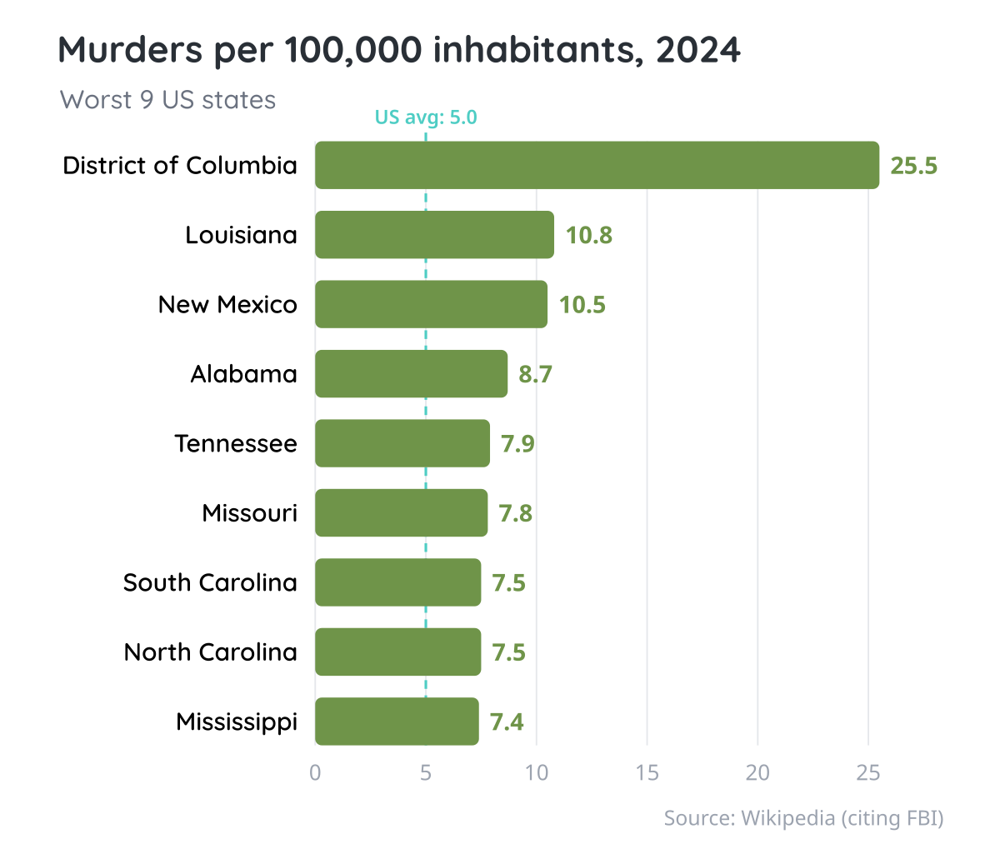

The Pond #7: Beware of percentages!
Also: come find stories with us and learn how to calculate CO2 emissions!
by Ada Homolova · February 26, 2026

Hello my dear frosches! 🐸
Last month was special for me: I have published my first data driven essay with moving charts and all! Read: The Missing Voters, on how mobile Europeans can not chose the governments that tax them.
Spring is coming and The pond is a waking up! We have 2 live events for you next month, as well as weekly hangouts, some interesting reading material and tools.
Read more about it all below!
Happening at The Pond
Next month we will offer two training sessions:
🎬 How to find stories in data? Jonathan Stoneman, presented with a dataset he's never seen before, will demonstrate how a data journalist uncovers stories. Live! Beginner friendly and questions welcome. Thu March 5th at 15:00 CET!
🧮 Calculate yourself: CO₂ emissions for climate reporting. How can basic high school chemistry strengthen your reporting? Freelance science reporter Thomas Goorden will demonstrate how you can calculate CO₂ emissions directly from any known amount of fuel or plastic, and vice versa. Thu March 19th at 10:00 CET!
☕ Weekly community hangouts continue every Monday at 15:30 CET! Do you need help or do you just want to hang out? Come for the coffee machine chats you're missing when working from home!
Made at The Pond
🎥 In The lazy journalist's secret: AI classification we offer a look behind the scenes of the mentorship programme. In 20 minutes, you will learn how to use a zero-shot classification model to categorize a dataset column that does not differentiate between persons and companies.
📊 Our newest blogpost The pitfalls of percentages in the news by Jonathan Stoneman dives into how percentages can be confusing and misleading. Jonathan’s observations are on point as always with a hint of English humor.
Mentorships open!
🧪 Want to level up your data skills with 1:1 personal attention and hands-on guidance? The second cohort of this year starts on the 1st of April. Check out more details on the mentorship page!
What We're Reading
🍺 I enjoyed the methodology of Lauren Leeks analysis on Britain’s 14,000 lost pubs. It’s a story about how private equity reshapes the local communities. Very suitable way for journalists to finding stories as well!
🔎 Searching through the Epstein files with Python. A great example of using code for investigative journalism from the Read/Write newsletter by Hakan and Jan.
🚀 NASA's guide to Subtleties of Color for data visualization is a 6-part series on how to make the right color choices. By NASA! I learned we also can associate concepts with colors!

🎨 The Open Visualization Academy is a free resource for learning data visualization by the legendary educator Alberto Cairo.
📐 MyNextChart semantic search for chart inspiration! Helps you find examples of charts that suit your data and ideas.
That’s all for this month!
With 💚 and 🐸,
Ada